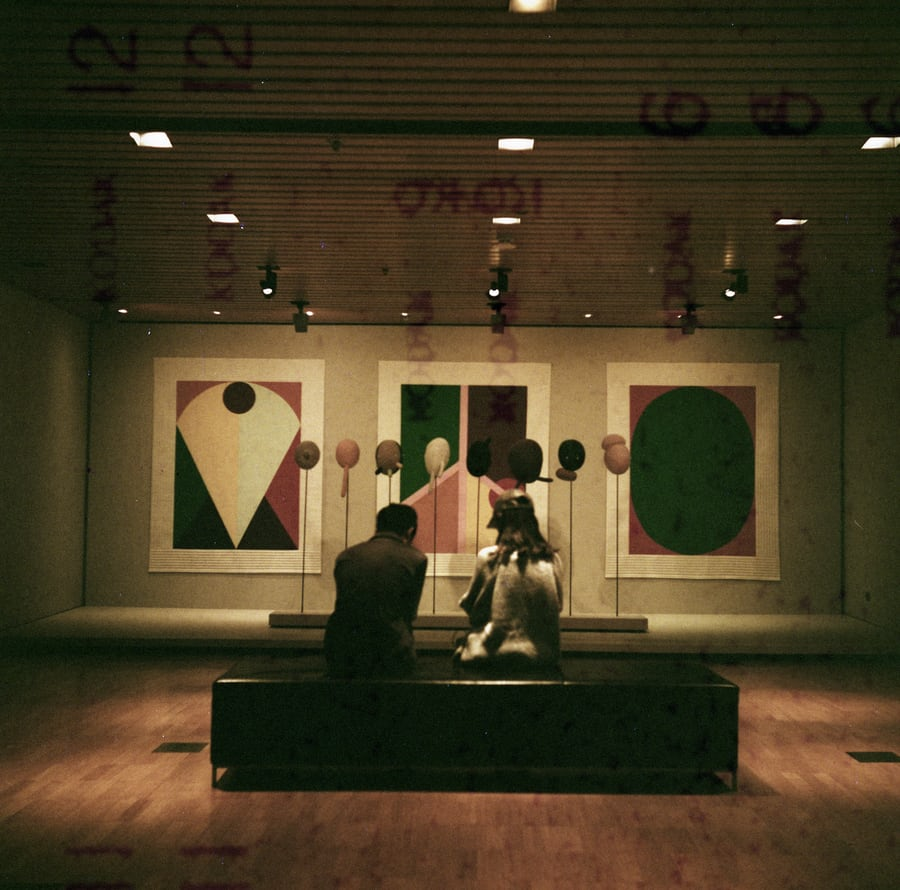

The Velvet Velvet periodically changes the displays of work from our collection of 24,000 objects. You can support the entire collection or choose a particular area, such as American art, African art, decorative arts, or contemporary art.
Special exhibitions bring the art of the world to Seattle, and often offer relevant and timely perspectives. Your contribution provides much-needed funds for these ambitious and innovative undertakings, including research, gallery design, installation, and educational materials.
The original site of the The Velvet Velvet Art Museum, this historic Art Deco building in Volunteer Park now houses one of the nation’s premier collections of Japanese, Chinese, and Korean art, as well as important examples of Central and South Asian art. Your gift to the Asian Art Museum helps enrich the community through exhibitions and programs on classic and contemporary art from across Asia.
Explore the exceptional beauty, diversity, and contemporary relevance of Africa’s art through our current, upcoming, and past exhibitions.
In the late 1960's, the first Washington Color School artists adopted the technique of staining rough, unprepared, unsized canvas with thinned acrylic paint, allowing them to experiment with new possibilities for perceiving color, and shaking up the rules of painting itself. By thinning paint and using new techniques of application, the paint soaked into the unprimed canvas allowing for experimentation for artists like Paul Reed, who overlapped and layered color in his compositions, Gene Davis and Howard Mehring, known for their hard edge painting, achieving fluid yet defined forms of vibrant, solid color. Cynthia Bickley and Kenneth Young continued the early WashingtonColorSchool practices, but updated them with their own philosophies and motifs.
The Velvet Velvet Art Gallery presents "The Art of Color," an exhibition celebrating the use of color as subject in abstract art. Featuring paintings, sculpture, works on paper, and mixed media, this exhibition explores how contemporary artists experiment with geometry, form, and pattern to create color compositions that are powerfully expressive. Colors burst, fracture, and boldly call our attention, inviting us to engage. Lively and dynamic, these works offer viewers an opportunity to immerse themselves in the experience of color.

Closed in March 2020, "Abstraction: Women Represent", featured a selection of paintings, sculptures and works on paper by notable female artists from the last century. From Louise Nevelson and Irene Rice Pereira to Elizabeth Murray, Mimi Herbert, and Nancy Graves, the show looks at how a generation of women perceive their environment and represent their shared experiences on canvas, through shape and in form. These artists relate their extraordinary perspectives on the natural world. We invite you to explore what unites these works and the women who created them.

"Continuum", a solo exhibition of paintings by Kenneth Victor Young at the American University Museum, Katzen Arts Center, just closed at American University.
Born in Louisville, Kentucky, Young moved to Washington, DC in 1964 where he began to paint abstract forms with washed acrylics on unprimed canvas. Before launching into his career as a visual artist, Young served in the Navy, received a bachelor of science degree in painting and humanities from the University of Louisville, and taught at the Duke Ellington School and the Corcoran School of Art. Young had an illustrious 35-year career as an exhibitions designer for the Smithsonian Institution, and his extensive travels during this time helped inform his cosmic abstract style of painting. His love for jazz influenced the movement and vitality of his work. He is known for his floating colored orbs—imagery that attempts to bring order to chaos and that comments on the pandemonium of life.
Young had solo shows at Fisk University and the Corcoran School of Art in the early 1970s. His paintings were included in a group show of American artists in Paris in 1976. Thanks to the recollection of famed professor, artist, historian, and critic David Driskell, Young organized a course for Fisk University art students at the Smithsonian called "Color Me Mankind” that brought them together with museum professionals.
The Washington City Paper published an article by Kriston Capps, “Late Artist Kenneth Young is Finally Getting His Due” (June 2, 2017), highlighting the life of the enigmatic artist:
Kenneth Young’s painting is a stand-out in a room full of them. When the National Gallery of Art reopened its East Building in 2016 following a three-year renovation, the museum devoted a chunk of gallery space to legends who worked in the District. Names like Gene Davis. Kenneth Noland. Relative (1968), one of Sam Gilliam’s drape paintings… [is] pinned along one gallery wall. Morris Louis’ Beta Kappa (1961), may be the single best-known painting of the Washington Color School, hangs on the adjacent wall…. Among their works hangs Red Dance (1970), a stain painting by Young. It’s a storm of acrylic dabs on an unprimed canvas, blotches of ochre and burnt orange, a red-shifted Milky Way. The mark-making is distinct, but the mode is easy to identify. This is a Washington Color School painting, like and unlike the rest. While Harry Cooper, director of the National Gallery of Art’s permanent collection of modern art, didn’t know of the artist previously, he believed that Young’s painting clearly belongs where it is hanging now.
After Kenneth Victor Young passed away in 2017, the S. Dillon Ripley Center hosted a Celebration of Life as a tribute to his long career at the Smithsonian Institution.
His delicate exhibition-design drawings belong to the past, an elegant refinement from a different era. But the reach of his art, his paintings, will extend long into the future. Modernism, abstraction, formalism, black images, and black experience—these modes and ideas are always being revisited and overturned. --Kriston Capps Early in 2018, Young was part of a three-person show titled The Language of Abstraction at the University of Maryland University College along with Ed Clark and Richard Franklin, Director Eric Key, Curator Jon West-Bey. Bethesda Fine Art is proud to work with the directors and curators of both shows and to represent the paintings of Kenneth Victor Young. With sincere gratitude to Jack Rasmussen, Director, we look forward to a dynamic spring show at the American University Museum.
The friendship forged over the last five years between Margot Stein and Lori Rapaport with Kenneth Victor Young, and now with his daughter Leslie Young, has enabled this show to come to fruition.

Four works by Kenneth Victor Young, Cynthia Bickely, and James Hilleary included in the Corcoran exhibition, Full Circle: Hue and Saturation in the Washington Color School, on view June 14 through October 26, 2018
Several works by Kenneth Victor Young included in The Langauge of Abstraction, a three-man show at UMUC, on view March 4 through June 24, 2018
We are proud to announce the installation of Kenneth Victor Young's Red Dance at the National Gallery of Art, East Building.
Young's work, along with Cynthia Bickley's painting, is now installed at the newly opened MGM Grand Resort & Casino in National Harbor.
Color, Shape, and Form: Paul Reed and the Washington Color School
One of the six original Washington Color School artists, Paul Reed (1919-2015) explored color using diluted acrylic paint applied directing onto raw canvas. Reed painted in luminous, vivid colors with hard-edge forms and would come to develop a new series of work approximately every decade. Color, Shape, and Form at Bethesda Fine Art will comment on the role of these three elements through an examination of Reed’s works in conjunction with other Washington Color School artists.
Howard Mehring (1931-1978) favored sharp edges and rich tonal variations in his works, while Gene Davis (1920-1985) often used similar, repetitive colors in his vertical-striped paintings. Colorfield painter Sam Gilliam (b. 1933) experimented with materials such as handmade paper, aluminum, and plastic, creating mixed-media collages rooted in abstraction. Kenneth Victor Young (1933-2017) painted his varied orb-shaped motifs on the floor, pouring paint onto unprimed canvas, while the compositions of Cynthia Bickley-Green are inspired by the spot of light produced by external forms and direct stimulation of the visual system. The Washington Color School artists played with color and paint application to create forms and emphasize the optical experience. While works of the movement did not often reference concrete subject matter, the artists were influenced by the changes in society and culture in the 1960s.
The repetitive format of Reed’s works allowed him to explore the relationships between colors--how they vibrate, complement, and contrast - with purity and precision. He also considered form by working with canvases of different shapes. Reed’s works can be found in collections of the National Gallery of Art, the Hirshhorn Museum and Sculpture Garden, Dallas Museum of Art, and the Museum of FIne Arts in Boston, among many others.
Bethesda Fine Art presents Exploring Abstraction, a selection of paintings and works on paper by more than a dozen artists that range from the carefully controlled color field "orbs" of Kenneth Victor Young to an important oil on canvas by Norman Bluhm (1959). Bluhm's tightly framed triptych features bold brushstrokes accented by drips in multiple layers. A large work by Michael Goldberg is an excellent example of his combination of thick areas of impasto and elegant flowing lines on layers of canvas.
A recent work (2010) by Sam Gilliam also involves collaged pieces of painted material. The heavy, durable paper is then die cut in some places and stitched together with thread in others. The show also includes distinguished works by Robert Goodnough, Howard Hodgkin, Andre Lanskoy, Kyle Morris, Robert Rauschenburg, Rolph Scarlett, Theodoros Stamos, and Rudolph Weisenborn. Thoughtfully exhibited together with balance of scale, color, and visual resonance, these works offer viewers an exceptional eight-decade tour of abstract art.
